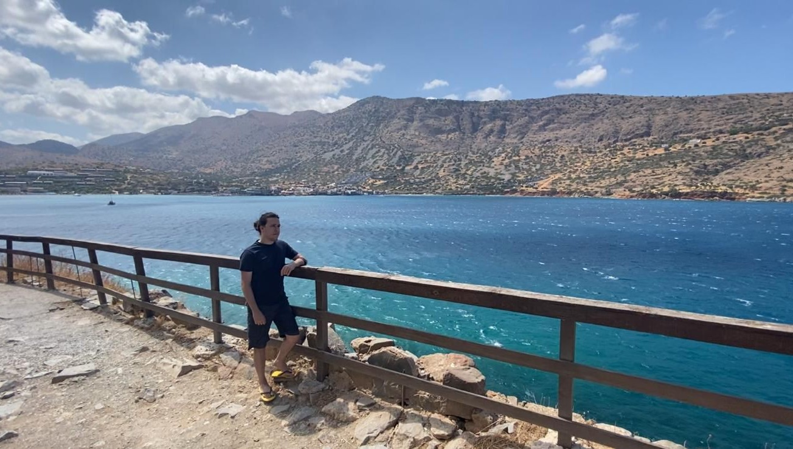
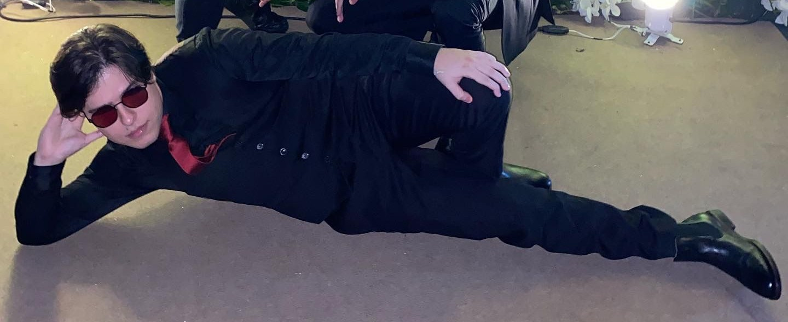

YOU CALL IT ZOOMING OUT I CALL IT BRAINSTORMING
I'm Vinicius — to me, creativity should flow naturally.

Who I am
Born in Brazil in 1998, raised with Italian roots, cured by Irish rain since 2017 — I'm Vinicius, a UI/UX Designer who believes great design should feel as natural as dreaming (and as satisfying as a perfectly cable-managed PC build).
I hold a Master's in Creative Digital Media & UX and a Bachelor's in Arts, Entertainment and Media Management, both earned at TUD — Technological University Dublin. I speak English and Portuguese fluently, a little Spanish, and I'm learning Italian — slowly, but with passion. I also have ADHD, which I've weaponised into a superpower: when something catches my attention, I hyperfocus until it's done right. Design catches my attention every single time.

What I do
I'm a User-Centered Design (UCD) advocate with a hands-on portfolio covering UI design, web and mobile design, interactive prototyping and frontend development. My toolkit includes Figma, Adobe Creative Suite, HTML, CSS and React Native — and I'm always adding new tools to the bench. I've led in-depth UX case studies, collected user feedback and translated messy data into clean, intuitive interfaces. (Yes, I genuinely enjoy that part.)
I also bring a solid background in Quality Assurance and Process Management from working with multinationals like Microsoft, Infosys and Keywords. Contributing to Agile linguistic teams, building QA strategies from scratch, and navigating Jira, TestRail, MemoQ and CRM systems taught me one thing: quality is a habit, not a phase.
This portfolio? Built entirely by me. Every pixel, interaction and animation was designed and coded from scratch — HTML, CSS, and yes, some JavaScript too (I'm learning). Consider it a live project in its own right.
Beyond the screen
When I'm not designing or buried in JavaScript tutorials, I'm building computers, taking landscape photographs, drawing, gaming, or occasionally going live for anyone patient enough to watch. I value growth and experience over a pay cheque — I know where I want to get to and I'm putting in the work every day to get there. People who've worked with me tend to use the word "trustworthy." I like that word. I plan to keep earning it.